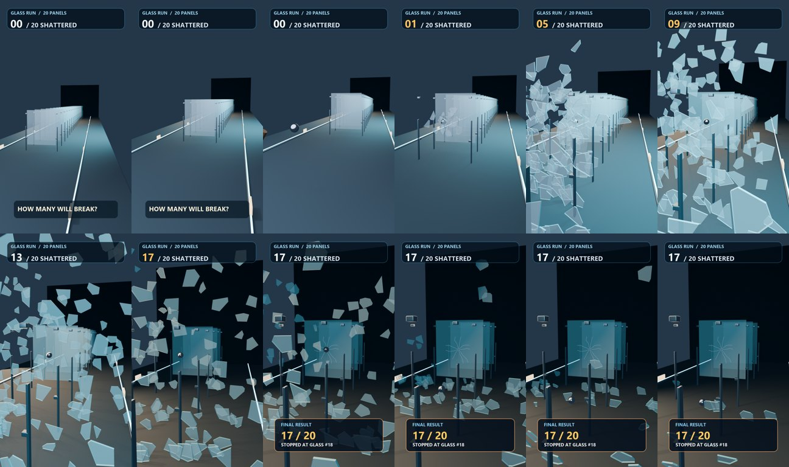

유리판 20장 챌린지 · V1 / V2
같은 8초·24fps·720×1280 기준의 연출 비교입니다. V2는 유리 조각의 형태·충돌 직후 움직임·카메라 거리·소리를 개선한 시안입니다. 관통 개수는 양쪽 모두 17/20이며 정밀 물리실험 결과가 아닙니다.
V1 · 사각 조각
V2 · 불규칙 파편
V2 스토리보드

두 영상은 파일 내 상대경로로 연결됩니다. Chrome/Edge에서 직접 열어 재생할 수 있습니다.
같은 8초·24fps·720×1280 기준의 연출 비교입니다. V2는 유리 조각의 형태·충돌 직후 움직임·카메라 거리·소리를 개선한 시안입니다. 관통 개수는 양쪽 모두 17/20이며 정밀 물리실험 결과가 아닙니다.

두 영상은 파일 내 상대경로로 연결됩니다. Chrome/Edge에서 직접 열어 재생할 수 있습니다.